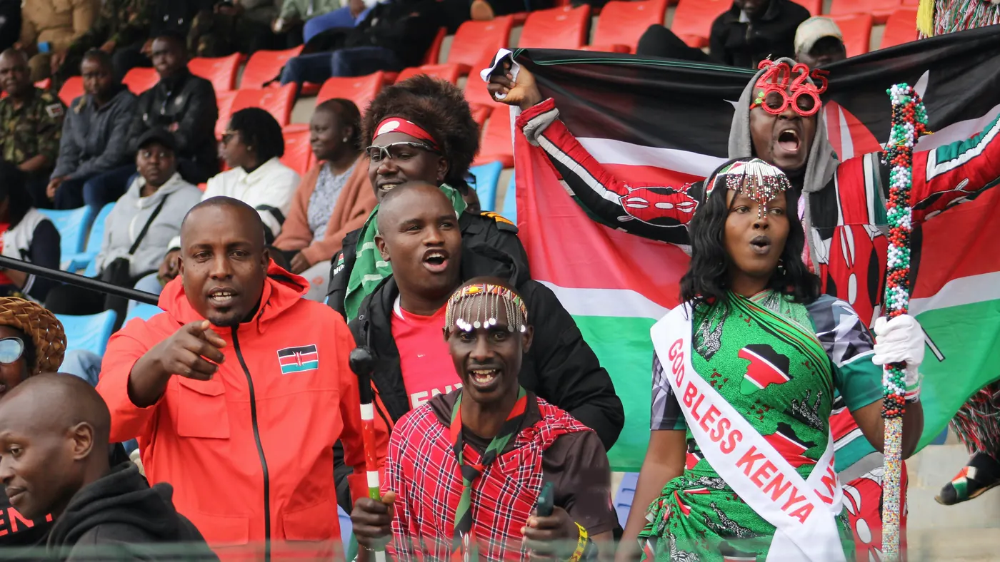
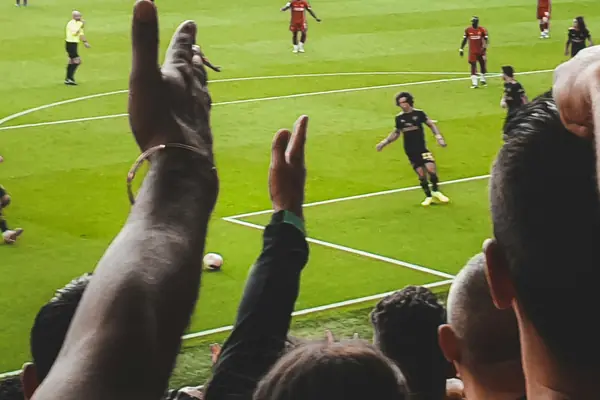
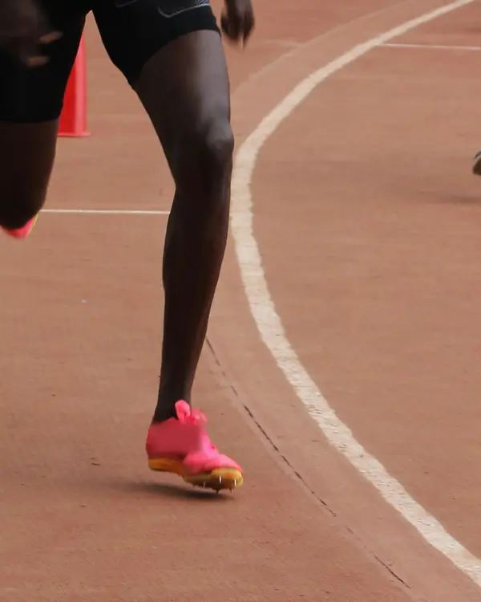
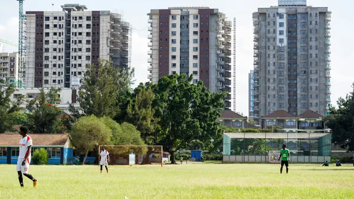

Stop 4 of 7 · Matchday
Siku ya mechi.
Matchday in Nairobi.
Places to watch the game, and a guide to Nairobi's football stadiums for Kenya Premier League weekends and other big matches.
Photo: Justin Lagat / Unsplash (opens Unsplash in a new tab)Matchday in pictures
Around the city. These photos set the scene; they are not of the places listed on this page.

Offtoseetheworld, photo on Unsplash (opens in a new tab) 
Selma Da Silva, photo on Unsplash (opens in a new tab) 
Justin Lagat, photo on Unsplash (opens in a new tab) Justin Lagat, photo on Unsplash (opens in a new tab) 
Maingi Mutiso, photo on Unsplash (opens in a new tab)
Where to watch
Sports bars and other places to watch the game in Nairobi, added area by area. Ask the venue which matches it is showing. Fan zones and stadium shuttles appear here only once their organisers announce them. Listed so far: Kilimani, Karen, Lang'ata and Thika Road.
Directory listing means we show only the name and location published on the business's own website. Prices and WhatsApp booking switch on when the business joins.
Nothing matches those filters yet.
Stadium guide
Where Nairobi's football stadiums are, with directions and the places on KaribuFans near each one. The organiser of each match decides where it is played, so check their announcement.
-
Ngong Road
Talanta Stadium
Also called Talanta Sports City or Raila Odinga International Stadium
Jamhuri Grounds, Ngong Road
As reported in early October 2026: about 95% complete, with completion targeted for 31 December 2026; no opening match has been announced. The government has said it will take the name Raila Odinga International Stadium when it opens.
Nothing on KaribuFans is listed near this stadium yet.
Location from this source for Talanta Stadium (opens in a new tab), checked 9 Oct 2026.
-
Thika Road
Moi International Sports Centre, Kasarani
Also called Kasarani Stadium, MISC Kasarani or Moi International Sports Complex
Thika Road, Kasarani
About 15 km from the city centre on Thika Road. The complex also has an indoor arena and an aquatic centre.
Location from this source for Moi International Sports Centre, Kasarani (opens in a new tab), checked 9 Oct 2026.
-
CBD
Nyayo National Stadium
Also called Nyayo Stadium
Lang'ata Road at Mombasa Road
On Lang'ata Road near the city centre, part of a sports complex with an indoor arena and an aquatic centre.
Location from this source for Nyayo National Stadium (opens in a new tab), checked 9 Oct 2026.
Matches in Nairobi
Kenya Premier League, national team and tournament matches, added only once they are officially announced.
Stadium essentials
Gate times, bag rules and seating are set for each match by its organiser. These are the basics; your ticket and the organiser's announcement have the rest.
Gate times change from match to match. Check your ticket or the organiser's announcement, and arrive early for big games.
Rules differ by event and stadium. Check the organiser's list before you go, and travel light.
Leave early: roads near a stadium get busy before and after a match. The Rides page opens Uber ready for your trip; check the destination before you confirm.
Ask the organiser about accessible entrances, seating and drop-off points before matchday.
Nairobi evenings can be cool. Bring a light jacket.